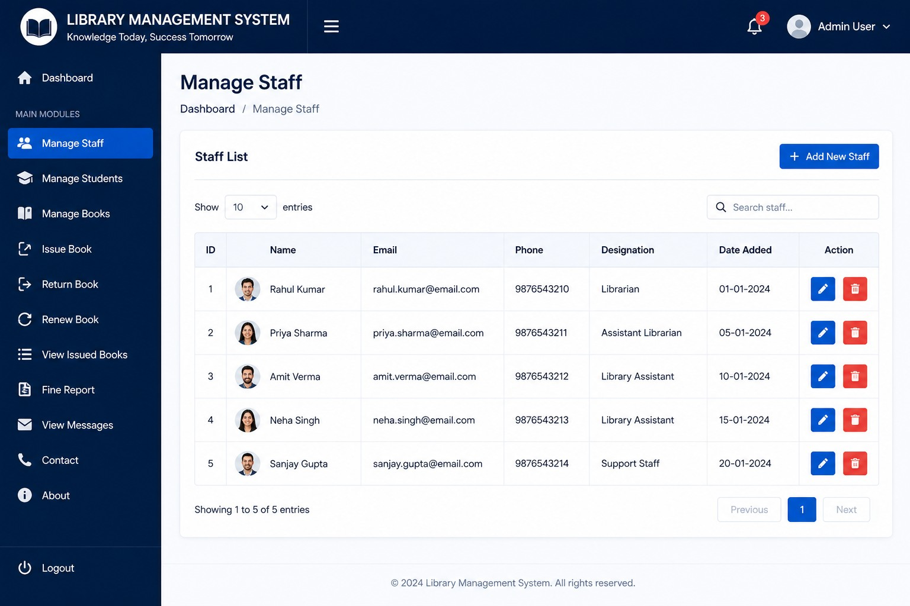

01 / WEB APPLICATION
Library Management System
A library workflow application covering book records, students, staff, issue and return operations, renewals and fine handling.
Explore on GitHub03 / PROJECTS
A collection of academic builds, web experiences and experiments. Each project represents a new problem explored and a skill developed.

A library workflow application covering book records, students, staff, issue and return operations, renewals and fine handling.
Explore on GitHubAn AI-focused web experience built with a modern frontend stack.
A surplus-food redistribution platform concept designed around community impact.
A C++ academic project demonstrating transaction flows and programming fundamentals.
A C programming project focused on game rules, loops and structured problem solving.
A practical college project combining mechanical construction and design thinking.
MORE WORK